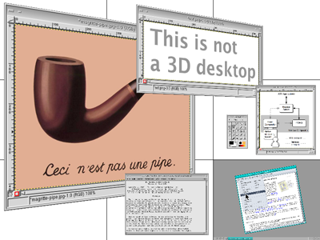

Metisse is an X-based window system designed with two goals in mind. First, it should make it easy for HCI researchers to design and implement innovative window management techniques Second, it should conform to existing standards and be robust and efficient enough to be used on a daily basis, making it a suitable platform for the evaluation of the proposed techniques.
Metisse is not focused on a particular kind of interaction (e.g. 3D) and should not be seen as a new desktop proposal. It is rather a tool for creating new types of desktop environments.
Metisse is being developed by O. Chapuis & N. Roussel, two members of the In Situ team (LRI - Univ. Paris-Sud & CNRS, INRIA). It is freely available under the GNU General Public License (GPL).
The following documents will tell you how to
This paper describes our original motivation and the system's architecture:
O. Chapuis and N. Roussel. "Metisse is not a 3D desktop!" In Proceedings of UIST'05, the 18th ACM Symposium on User Interface Software and Technology, pages 13-22, October 2005. ACM Press.
Questions, comments and suggestions should be sent to the mailing-list.